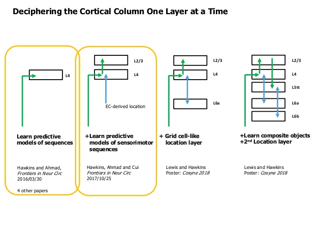
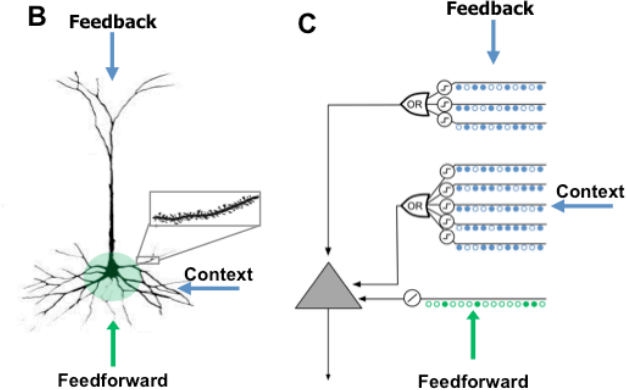
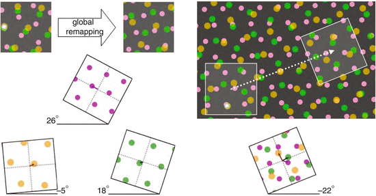
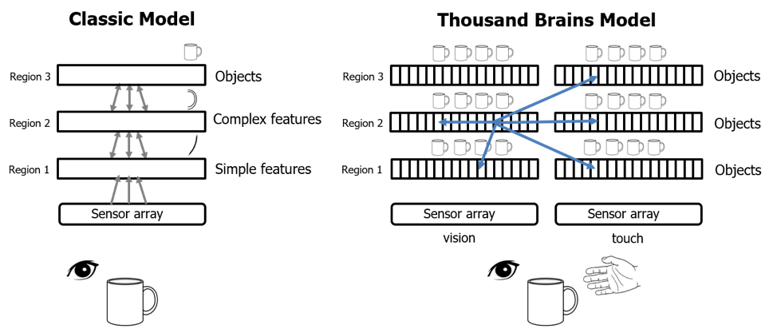

HTM Theory : short intro¶
HTM of Numenta aims to implement the processes happening in the cortex as close as possible to the way it works in the real brain.
The layers¶
Neo-cortical sheet is about 1000 cm^2 in area and 2.5 mm thick. Vertically it is subdivided to 6 layers.
The connections in general are organized in the following way :
L2,L3a,L3b,L4,L5tt, L5cc,L5ccns, L6a,L6b,L6ip,L6mp,L6bp
Cotex,Thalamus ==> Layer 4 (10%)
L6a <==> L4 (50%)
L4 ==> L3a
L3a ==> L5st
L5tt ==> L6b
L3a ==> Cortex
L5tt ==> Thalamus, Motor cortex
L3b => L5cc
L5cc => L5tt
L5tt => Th
L5cc <=> L6b

Neuron¶
The place to start is how do we model the neuron. Traditional NN use the so called perceptron as a base of the network, which is in essence a linear equation followed by non-linear modification. Neurons in the brain do not work like that, they are more like pattern detectors rather than a math equation.
The HTM neuron is modeled on the pyramidal neuron which is 90% of the neurons in the cortex.

First the input to the HTM neuron are binary patterns SDP:SDR not a real numbers. It has three inputs :
Proximal : those synapses (~10%) are where the Feed-Forward inputs come in, close to the neuron soma/body. The signal arriving here causes the neuron to fire.
Distal : those synapses (~90%) according to HTM theory are used to put the neuron in predictive state. They cant cause the neuron to fire but depolorizes it so that when feed-forward signal comes this neuron fires earlier and inhibits the nearby neurons.
Afferent : this is where the feedback signals comes in.
A pyramidal neuron normally has ~100 dendritic segments with ~100 synapses each.
The number of necessary synapses to detect a pattern is ~10-20.
Every segment act as SDP:SDR UNION, so on average it should be able to detect ~10’s of patterns.
Overall a neuron should be able to detect ~100’s of patterns at most a 1000.
The mini column¶
The next organization unit is not a layer as in NN, but a mini-column.
The mini-column contains 100-120 neurons aligned vertically with a cross section of 50 micro-meters.
The macro column¶
A macro-column is a bundle of ~100 mini-columns with a cross section of 500 micro-meters and is assumed to be the basic computational unit/circuit in the cortex.
The cortex contains 21-26 Billion neurons, which equals ~2 Million macro-columns.
The cortical column¶
To my understanding HTM theory need as output a binary of ~2000 bits, instead of 100, so the computational unit becomes 2000 mini-columns, instead of 100.
The cortex 21-26 Billion neurons, which is ~150 000 cortical-columns.
The Grid cells and Displacements¶
The Grid cells are what the name sez, a cells that become active when “agent” touch the “grid” that can be used to map any “space” (spatial,temporal,mental,conceptual) and allows the processes in the brain to manage and express Location, path-finding, navigation etc. in the fore-mentioned virtual or physical spaces.
A grid does not have a central point as a Cartesian coordinate system it is just the grid.
(You can pin a grid by a place cell, yes there are those too)
Normally single grid is not enough to cover the whole space.
That is why there are multiple grid-modules which when combined together can uniquely represent any specific point in a space.

On the image above you can see several grid-modules, where every one of them is activated at different angle, different spacing …
So in essence if we try to create framework based on Brain design principles the granularity we have to use is the Neuron and Macro/Cortical column, then we will follow the circuits/wiring to figure out how they function.
We will do that but because the cortex does not work by itself we will need a way to interact with it. AFIAK Numenta builds their model closely following the brain.
HTM modules¶
As I said my model is inspired by HTM but does not follow it 100%. Where I can, I simplify it and abstract it more, but there is one other big difference. I don’t do full neuron implementation, instead I create modules that interact by sending and recieving SDP::SDR’s between them and the internal machinery in most of the cases as you would see uses the abstraction of the HTM neuron.
Encoders¶
Encoders are the eyes and the ears of the system. Because the internal machinery works only with SDP:SDR’s any data has to be converted from numbers, dates, coordinates, categories … and so on .. to SDP’s. So thats what the Encoders do. You write them once for any datatype you need and then reuse them.
Spatial Pooler¶
Depending of how you encode the input data you may need to use Spatial Pooler or not. In most of the cases you will have to.
You may have Encoder that generate SDP with vsize of 500 and sparsity of 7%, or because your data requires it you may need to concatenate the result of two or more encoders. In cases like that it is very hard to control how big or how sparse your vector is.
It is not an easy task to create SDP’s which pick random bits and at the same preserve similarity you had in the original data. For this reason you use Spatial pooler.
The goal of SP is :
Have vsize and sparsity which is comfortable for the input data generated by the encoders.
Have vsize and sparsity required internally by the system
Preserve the similarity of the input data
One drawback of the SP is that you may need to pre-train it with random data, so that it stabilize. But if you have big stream of data you may skip pre-trainnig it, SP will adjust itself as the data flow.
One important thing : HTM is online learning system i.e. if in learn mode it adjust itself on every datum like the brain. In comparison NN are a batch systems.
Temporal Memory¶
This is the core of Macro/Cortical column implementation. According to HTM the main function of MC/CC is to constantly update a temporal model of the world and predict what happens next.
That is what TM does. Functionally a TM implements a Variable-length-Markov-chain. The trick is to split the the sequence at the branch node by using higher dimension symbols.
Here is quick illustration, let say you have the following two sequences :
A:B:C and X:B:Y
how would you make it so that given B it predicts the correct next symbol. Easy ;), split to higher dimension …. i.e. in the memory store :
A1:B1:C1 and X1:B2:Y1
now as the sequence goes the memory will ‘latch’ onto B1 or B2 depending on what happened before, so it will know what happens next.
We just need more dimensions which is easy with SDP w/o increasing the memory requirements :). Have the cake and eat it too !)
May be even decreasing the memory because of the properties of SDP:SDR, wow !! Eat the cake and have two left !)
if you ask me I don’t see it as a Markov chain, but as memory that remembers everything. Of course it has to be able to forget too.
BTW all this follows and is intricately linked to the chosen model of the HTM neuron as you will see later.
Temporal pooler¶
It is good to store the Universe, but a single column wont be able to do that. We would need to connect them in a hierarchy or in a pool of TM’s to be able to do abstractions, add redundancy, do parallel processing, work with multiple input streams … etc.
For this we need a Temporal pooler, which should :
1. Do many to one : compress a sequence of symbols to a single new symbol
2. The generated symbol should be stable and unique
3. Preserve similarity between similar sequences
Now we can pass this SDP:SDR around instead of the whole sequence.
Thousands Brain theory¶
In a standard NN you build hierarchy where one layer outputs are inputs to the next.
The brain hierarchy is not like this. The output of one layer can go to multiple layers above it. Also there are many connections laterally across the layers.
According to HTM theory every Macro/Cortical columns build model to what is senses at every layer. The difference is that the lower level are more detailed but on “shorter sequences”/object and the higher levels build more coarse/blurred model on a “longer sequence”/object
